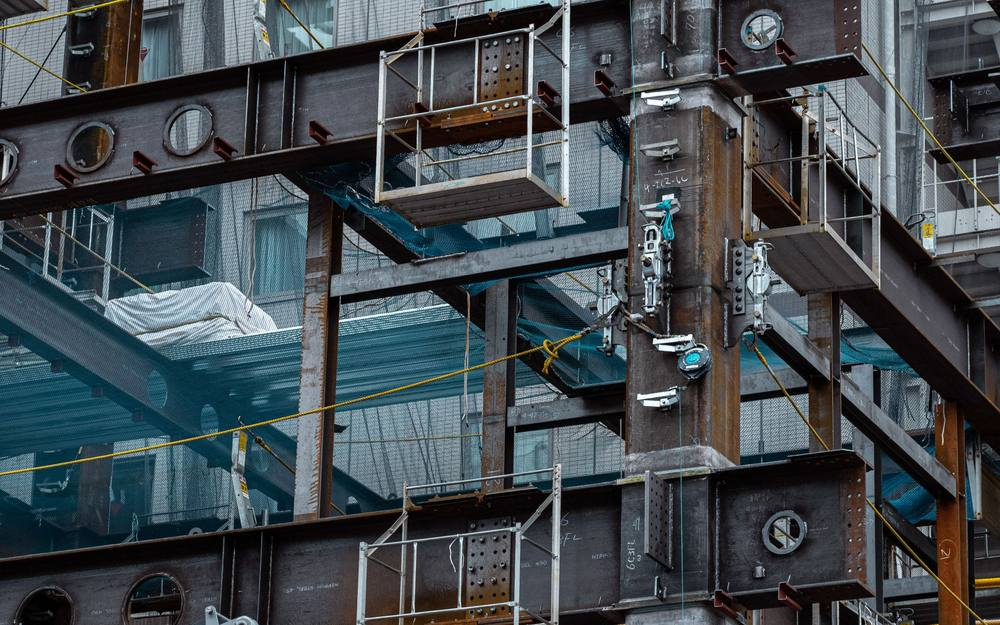

Structural Construction

Reinforced concrete frames, columns, slabs and cores for high rise and mid rise buildings in Addis Ababa and across Ethiopia. Grade One is the only classification cleared to take on the country's largest structural contracts, and it is the grade we have held since 2018.
Structure is where a programme is won or lost. A slab poured a week late does not cost a week, it costs every trade that was queued behind it. We plan the pour sequence, the formwork cycle and the rebar delivery as one schedule rather than three, which is how a floor cycle actually holds.
We work as main contractor on our own projects and as structural subcontractor to other main contractors, including on the Transport Sectoral Head Office and a G+21 mixed use tower for Gift Real Estate.
Full structural construction page